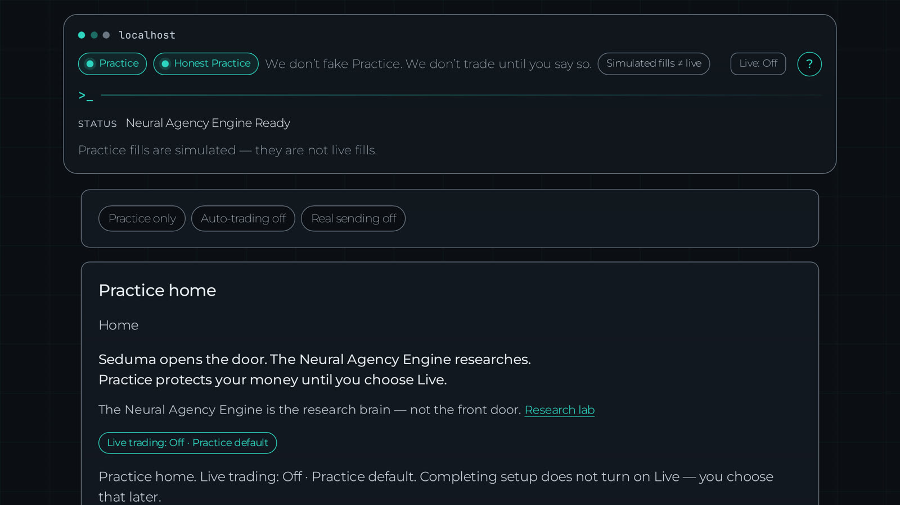
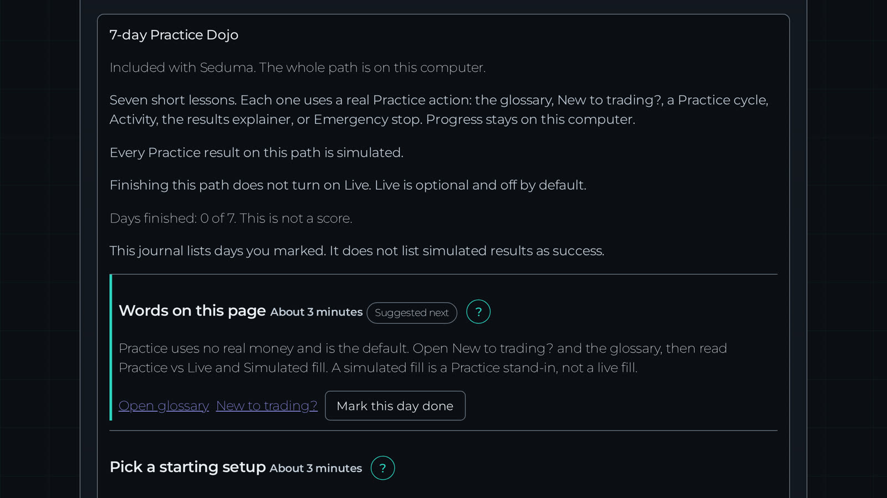
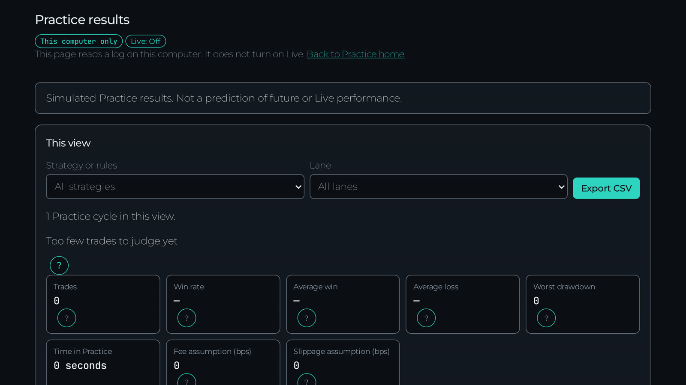
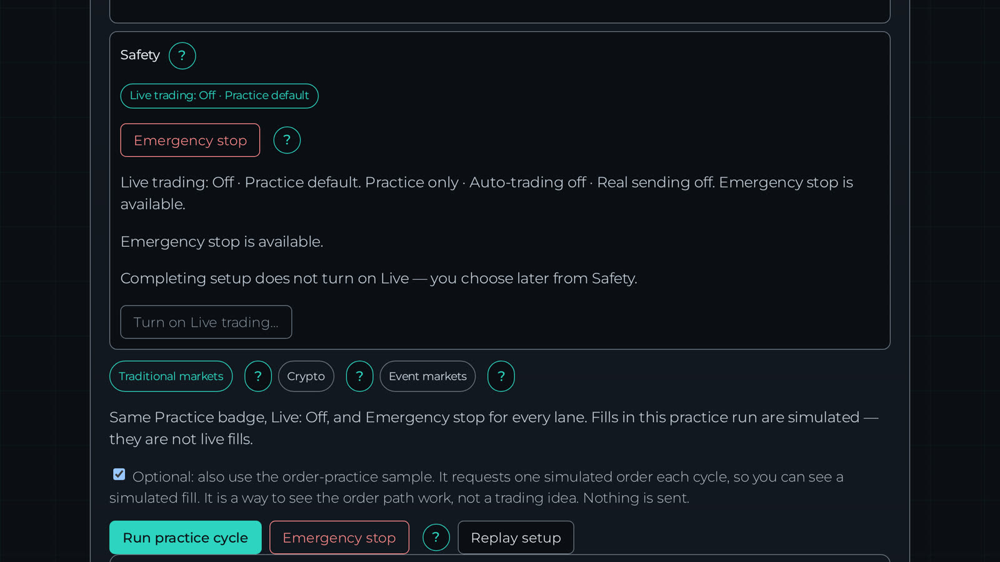
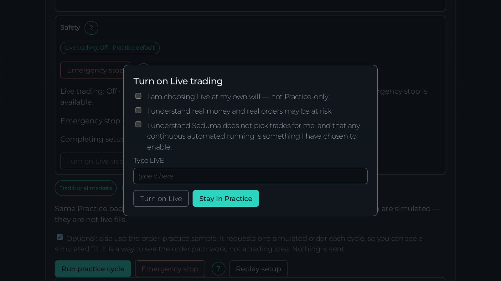

How to Use Seduma Trade: Install, Practice, and Read Your Results
Seduma Trade starts in Practice, and Practice uses simulated fills with no real money. This page walks you from the download to your first results. Optional later steps sit at the very end, in their own section, and you can skip them for as long as you like.
$49 once, no subscription, nothing to cancel. All sales are final. Seduma Trade has no refunds at this time, except where applicable law requires otherwise.
Trading real money involves risk, and you can lose money.
- You need
- Windows, macOS, or Linux, a web browser, and Python 3.11 or newer. The installer scripts stop with a plain message if Python is missing or too old.
- You open
- 127.0.0.1:8765, an address that only works on your own computer.
- You do not need
- A broker account or any keys for Practice. Docker is only for the optional Neural Agency Engine stack; the steps are on the Advanced setup page.
Watch a Practice walkthrough.
About 77 seconds, recorded on a fresh install in Practice. It starts at the download check, runs one practice cycle, shows the simulated fill in Activity, and opens the Live confirmation step without turning Live on.
01Install
Install and open Practice.
What you download is a zip called Seduma_Trade.zip. It is source code you run yourself, not a signed app, so there is no installer file to double-click.
Unzip it and you will see a folder named Seduma_Trade with three parts: seduma (the Practice console), neural-agency-engine (the research engine), and NAE-Model-A (the research toolkit).
Install and start Practice
Open a terminal (PowerShell on Windows), go into the
sedumafolder, and run the one-command installer. It makes a private Python environment in the folder, installs Seduma Trade, runs a health check, and starts Practice. It does not turn on Live.Windows
cd Seduma_Trade\seduma powershell -File scripts/install-and-start.ps1macOS and Linux
cd Seduma_Trade/seduma ./scripts/install-and-start.shWant to see the plan first? Add
--dry-runto either command. It prints what it would do and installs nothing.Prefer to do it by hand? Same result.
cd Seduma_Trade/seduma python -m venv .venv . .venv/bin/activate python -m pip install -e ".[api]" seduma practiceOn Windows, activate with
.venv\Scripts\activateinstead of the. .venv/bin/activateline.Health check only (does not start anything)
seduma practice --checkIf the health check fails, Practice will not start and it tells you why. Common reasons: the local page (port 8765) is already in use, or a part of the app is missing.
Optional Docker setup for the Neural Agency Engine paper stack is on the Advanced setup page.
Open Practice
Practice opens in your browser at http://127.0.0.1:8765/. That address only works on your own computer.
- No browser opened? Run
seduma practice --no-opento print the address, then paste it into your browser. If it asks for a token, it is in~/.seduma/practice/api.token. - You should see Paper Practice, Honest Practice, and Live: Off on every screen.

SimulatedPractice home. Practice mode and Live: Off are visible. - No browser opened? Run
02Practice
Practice, then read your results.
Practice fills are simulated — they are not live fills. Use these steps to check your own rules, and to check Seduma’s work.
The first-run walkthrough
Four short steps:
- Welcome to Paper Practice. Then pick what you would like to practice first: “Just show me how orders work”, Stocks, Crypto, Prediction markets, or “Not sure yet”. Options is greyed out and marked “Coming later”. You can change this anytime.
- Safety check. Read and tick the two acknowledgements. This does not turn on Live.
- Try a practice run. Run one practice cycle with the sample strategy. The sample only holds, so it is for learning how a cycle works. The fill you see is simulated.
- You’re set. The badge reads “Live trading: Off · Practice default”.
Example symbols such as EXAMPLE are only for learning how orders work. They are not suggestions.
Run the 60-second demo
The demo fills Practice with simulated data so you can see every screen in about a minute.
seduma practice --demo --no-openIt uses its own folder (
~/.seduma/practice-demo), separate from your everyday Practice. It prints a short list of what to look at, then serves Practice at the same address: http://127.0.0.1:8765/. Everything in it is simulated. Do not type LIVE during the demo.Do the 7-day Practice Dojo
The Dojo is on Practice home. One short lesson a day, each tied to something you can click:
- Day 1 Words on this page (open the glossary)
- Day 2 Pick a starting setup
- Day 3 Run one practice cycle
- Day 4 Read a simulated fill
- Day 5 Read the practice results log
- Day 6 Try Emergency stop
- Day 7 Leave Live off
Press “Mark this day done” when you finish a day. Progress stays on your computer. “Days finished” counts lessons. It is not a score. You can do the seven days at your own pace.

SimulatedThe 7-day Practice Dojo. Every result shown is simulated. Read your results
Each practice cycle is saved to a local results log. Open Practice results from the Activity card, or go to http://127.0.0.1:8765/practice-results. That address only works on your own computer. No second program and no token are needed.
Pick a strategy and a lane. You will see the number of trades, win rate, average win, average loss, worst drawdown, an equity curve, and time in practice.
How to read it honestly
- Every figure is simulated. The page says: “Simulated Practice results. Not a prediction of future or Live performance.”
- With fewer than 30 closed trades the page says “Too few trades to judge yet” and gives no verdict. That is normal in your first days.
- Fees and slippage assumptions change the simulated result. The page explains how.
- A “?” help button sits next to each figure and explains it in plain words.
- Export CSV saves the log for the strategy and lane you are viewing. The file starts with the simulated-results disclaimer.
Everything stays on your computer.

SimulatedThe Practice results page. Every figure is simulated. Know your Emergency stop
Press Emergency stop any time, on Practice home or in Safety. It refuses new orders. It does not close positions that are already open. In Practice it reads “Stopped, still in Practice”. The Dojo has you try it on day 6.

SimulatedEmergency stop: refuses new orders. Does not close open positions.
Stuck? Contact support
03Optional · later · your decision
Turning on Live later.
Read this first. Live is optional, and Practice stays the default. Nothing in the download turns Live on, and finishing setup does not either. Seduma Trade does not pick, recommend, or generate trades. Trading real money involves risk, and you can lose money.
Do not turn Live on until you have finished the Dojo and read your results log, and only if you understand your broker’s terms and the rules where you live. Stay in Practice if any of it is unclear.
Off by default
Live is off until you elect it. You do not need it to use or evaluate Seduma Trade. Adding a connection does not by itself turn Live on.
1. Your own broker keys
No Live keys come in the download. You add your own broker account’s keys in your own settings file (
.envin thesedumafolder, based on.env.example). Keep that file private and never share it. Seduma is not a broker or an investment adviser.2. You turn it on, with checks and typing LIVE
In Practice, go to Safety and choose Turn on Live trading. Live is confirm-gated: you must tick all three checklist items (you are choosing Live of your own will; you understand real money and real orders may be at risk; you understand Seduma does not pick or recommend trades) and type LIVE in capital letters.
Choose Stay in Practice to cancel with no change. After Live is on, the badge reads “Live trading: On · user elected”. You can press Return to Practice at any time to lock it again. The command-line equivalents are
seduma live electandseduma live relock.3. Approving orders
When Live orders are set up through the optional Neural Agency Engine order service, every order is held until you approve it in the Live order approvals panel in the console on your computer (the page at
http://127.0.0.1:8745/). You can reject any order. An order you do not approve in time expires and is not sent (the default wait is 120 seconds).That order service is off by default. The
docker-compose.live.ymlfile in the engine folder describes it, anddocs/LIVE_ORDER_SAFETY.mdin the same folder explains each check. It needs a long randomHMAC_SECRETthat you set yourself. The download does not include a one-click Live switch for it: going beyond the Practice settings is your own change in your own files, and your own decision and risk.4. A per-order cap
The default cap is $15 per order, for options premium, crypto order size, and Seduma’s own Tradier connection. Options orders are also limited to 1 contract by default. You can change these in your settings (
NAE_MAX_OPTION_COST_USD,NAE_MAX_CRYPTO_ORDER_USD,SEDUMA_MAX_ORDER_NOTIONAL_USD,NAE_MAX_OPTION_CONTRACTS). A setting that cannot be read falls back to the small default. It never removes the limit.5. Money out stays off
Withdrawals, transfers between accounts, and payouts are refused. Setting
NAE_MONEY_OUT_ENABLEDis not enough to allow them. Leave it off.
6. Emergency stop still works. Know what it does not do.
Emergency stop makes Seduma refuse to send new orders. It does not close open positions, and it does not cancel orders that are already at your broker. Manage open positions and working orders at your broker.
Paper/Practice P&L is not a promise of live results. Practice fills are simulated. Trading real money involves risk, and you can lose money.

Shown, not enabledSeduma is not a broker or an investment adviser. Not investment advice.
Ready to start in Practice?
$49 once. No subscription, nothing to cancel. Finish the 7-day Dojo, and see for yourself how orders and simulated fills work. All sales are final. Seduma Trade has no refunds at this time, except where applicable law requires otherwise.
Practice results are simulated. Trading real money involves risk, and you can lose money.